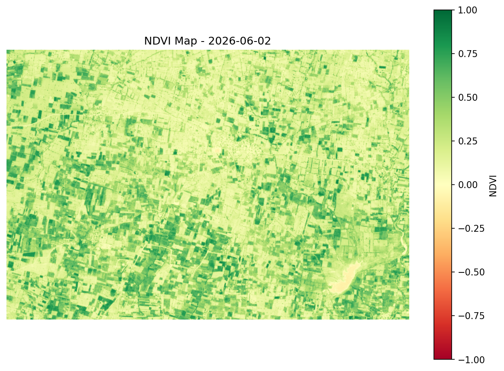

Avg NDVI
0.30
Healthy fields
9.8%
Stressed fields
36.1%
Trend vs previous
+0.017
NDVI map - selected date

Average NDVI over time
Vegetation change (Mar 29 to Jun 02)
46% decreased, 20% increased
Advisory
Large portions of the field area show declining NDVI since March, consistent with post-harvest fields. Early June shows partial recovery, suggesting new sowing has begun in some zones.